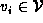
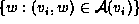
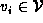
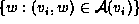
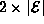
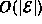
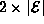
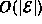

Data Structures and Algorithms
with Object-Oriented Design Patterns in C++
Data Structures and Algorithms
with Object-Oriented Design Patterns in C++
One technique that is often used for a sparse graph, say  ,
uses
,
uses  linked lists--one for each vertex.
The linked list for vertex  contains
the elements of ,
the set of nodes adjacent to
linked lists--one for each vertex.
The linked list for vertex  contains
the elements of ,
the set of nodes adjacent to  .
As a result, the lists are called
adjacency lists .
.
As a result, the lists are called
adjacency lists .
Figure  shows the adjacency lists for the directed graph
shows the adjacency lists for the directed graph  of Figure and the directed graph
of Figure and the directed graph  of Figure .
Notice that the total number of list elements used to represent
a directed graph is
of Figure .
Notice that the total number of list elements used to represent
a directed graph is  but the number of lists elements used to represent
an undirected graph is .
Therefore, the space required for the adjacency lists is .
but the number of lists elements used to represent
an undirected graph is .
Therefore, the space required for the adjacency lists is .
By definition, a sparse graph has  .
Hence the space required to represent a sparse graph
using adjacency lists is
.
Hence the space required to represent a sparse graph
using adjacency lists is  .
Clearly this is asymptotically better than using adjacency matrices
which require
.
Clearly this is asymptotically better than using adjacency matrices
which require  space.
space.
 Copyright © 1997 by Bruno R. Preiss, P.Eng. All rights reserved.
Copyright © 1997 by Bruno R. Preiss, P.Eng. All rights reserved.